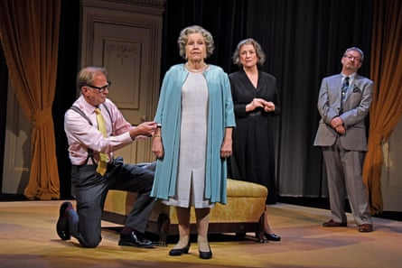
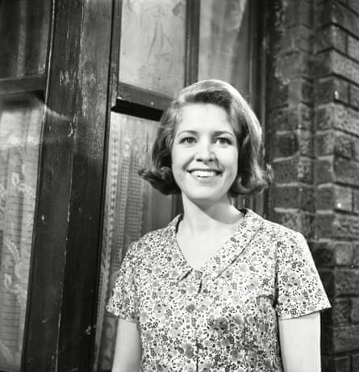
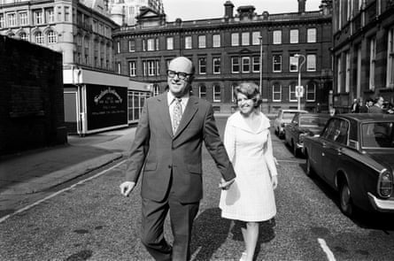
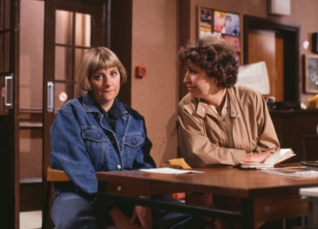
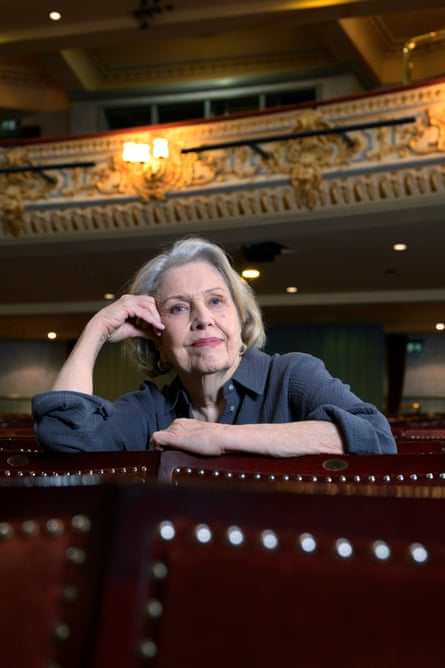
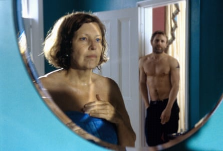

A nne Reid wants to get one thing straight from the off. She adores working with the director Dominic Dromgoole . “He treats actors like grownups. Some directors feel as if they’ve got to play games and teach you how to act. But a conductor doesn’t teach a viola player how to play the blooming instrument, does he?” She talks about directors who get actors to throw bean bags at each other and go round the room making them recite each other’s names. “Blimey! I want to be an adult. I think I’ve earned it now.” She pauses. Reid has always been a master of the timely pause. “You can’t get more adult than me and be alive really, can you, darling?”
Reid turned 90 in May. She celebrated by going on a national tour with Daisy Goodwin’s new play, By Royal Appointment. I catch up with the show at Cheltenham’s Everyman theatre. She’s already done Bath. Then there’s Malvern, Southampton, Richmond, Guildford and Salford. I feel knackered just thinking about it, I say. She gives me a look. “Oh, they send me in cars. I don’t have to toil much!”
Yesterday she did a double shift – matinee and evening show. Reid is magnificent as the queen in this witty, moving drama, directed by Dromgoole. The play documents Elizabeth II’s years on the throne via relationships with her dress designer, milliner and, most poignantly, her dresser. We witness the major events of her reign backstage as her team prepares appropriate outfits for them. Reid’s queen is fabulously multifaceted – funny and mischievous, loyal and dutiful, devastated and disappointed, nostalgic and lustful. There are myriad lines to learn and she’s on stage virtually the whole two hours. When Reid emerged for the evening performance’s encore, she looked as if she could have happily popped out a third show of the day.
Anne Reid as the queen in By Royal Appointment, with (from left) James Wilby, Caroline Quentin and James Dreyfus.Photograph: Nobby Clark
She tells me she’s delighted with the part, not least because it’s so different from the roles she played earlier in her career. Back then she tended to be cast as working-class mothers tethered to the kitchen or women working in aprons (Victoria Wood’s canteen comedy Dinnerladies, the cook in the revival of Upstairs Downstairs). “I’ve always been below-stairs, and you can’t get more upstairs than the queen!”
The weird thing is, she says, she grew up in a middle-class family and was privately educated. Her grandfather, father and all three brothers were journalists. Reid’s dad was a foreign correspondent for the Daily Telegraph, and she discovered in 2015 (when participating in the genealogy TV show Who Do You Think You Are?) that he also had a sideline spying for the British in the second world war. Her brother Colin was a columnist for the Daily Mail, and her husband Peter Eckersley worked for the Guardian before becoming head of drama at Granada, which is where they met.
Did she ever fancy a career in journalism? “No, I wanted to be a ballet dancer. My dad wanted me to be a performer because my grandma was some sort of small-time performer. I had a letter from him in the war saying, ‘I want you to drink milk when Mummy gives it to you because that will make you strong, but most of all I want you to learn elocution and to sing and dance.’” She was sent to boarding school in Wales, dutifully took the elocution lessons and lost her geordie accent, and her teacher told her parents that Anne was a born actor. She went to Rada and was the only girl in her year to win a prize.
For the past couple of decades, her parts have been more varied and challenging. Now she’s best known as the genteel Celia in the BBC’s comedy-drama Last Tango in Halifax; the family matriarch Muriel in Russell T Davies’s dystopian series Years and Years; the grande dame Lady Denham in the Jane Austen adaptation Sanditon; and the mousy May, who has a sizzling affair with her daughter’s boyfriend in the 2003 movie The Mother. All of them dream roles, beautifully played.
Anne Reid as Valerie Barlow in Coronation Street, 1967.Photograph: ITV/Shutterstock
Reid is a household face rather than name. When I tell friends I’m interviewing her, most look blank. Then I show them pictures of her best-known roles, and they say they love her.
We meet in the boardroom at the Everyman. Reid is elegantly casual – shirt, slacks, a dash of lipstick. She can look a little sour and disapproving, then she smiles and her face lights up. It’s one of Reid’s great dramatic gifts, transforming her from dour curmudgeon to empathetic beauty (and vice versa) in a flicker.
Your career has been amazing, I say. She gently rebukes me. “Well, it hasn’t , actually, darling!” Give me a chance, I say – I mean in recent years. “Yes, right! Well, in the beginning I don’t think casting directors rated me. A casting director said to me once, ‘Dear Anne, you always help us out when we’re absolutely desperate.’ Meaning they’d tried everyone else in the business and no one was available. On Desert Island Discs, Kirsty Young said to me, ‘Your career’s the wrong way round.’ I said to her, ‘I think it’s the right way round actually.’ Most people have success in their 20s and then it starts to fade away. Mine’s just got better and better and better.” In 2010, she was awarded an MBE, presented by the queen, upgraded to a CBE in King Charles’s 2025 new year honours list.
Reid was actually famous in her 20s – again a household face rather than name, as Ken Barlow’s first wife, Valerie, in Coronation Street. She made her debut in 1961, and was electrocuted by hairdryer a decade later – still one of the iconic soap deaths. Reid says she was desperate to leave. “I said, ‘I have to go – I’m going mad.’” Was she bored? “Oh yeah ! I was so frustrated. I didn’t get a laugh in nine years.”
She thinks that being in Coronation Street pigeonholed her as northern and working class. Didn’t she tell casting directors that she was privately educated and more than capable of playing posh? “Honey, have you ever met a casting director? Once you’ve done Coronation Street, you’re working class. I do think that hangs about.” Even if she was married to the upwardly mobile teacher Ken Barlow? “Well, he’s pseudo-middle class!” she says dismissively. “God, I don’t know how he’s stayed in there so long. I would have gone totally bonkers.” I tell her William Roache is in his 65th year on the Street. She looks aghast. “It suits some people, but it doesn’t suit me. No! I would have been in the funny farm by now, darling.”
Reid and Peter Eckersley on their wedding day in Manchester, 1971.Photograph: Mirrorpix/Getty Images
It was on Coronation Street that she met Eckersley, who wrote many of the scripts. She adored him, and tells me how wise and witty he was. “My husband was the funniest man in the world. You know that thing Clive James said: ‘A sense of humour is just common sense dancing’? Wonderful saying! Pete had that pinned up on his office wall. Michael Parkinson said he was the funniest man he’d ever met, and so did Victoria Wood.”
She married Eckersley in 1971, the year she left Coronation Street, and got pregnant soon after with their son Mark. But life didn’t work out as she had planned. First her mother became ill and then Eckersley was diagnosed with cancer. She became a full-time carer and mother. In 1981, Eckersley died. “He was ill for a very long time. It was a miracle that he survived that long. We were both 45. Terribly young when I think about it now. I can’t really talk about that much.” She looks upset. “Mark was nine.”
How did she cope? “People deal with these things. You just get on. I wish I’d been the person I am now. I’m much wiser now. I was a fool when I was young.” In what way? Well, she says, Mark had a top education at boarding school, became head boy and went on to the University of Oxford, where he met his wife, but she’s still not sure she did the right thing in sending him away. “He’s lovely. He’s a film editor. And I’ve got two lovely grandsons. Family’s the most important thing in my life.”
When Reid finally returned to work, she’d been away for 12 years, and it felt as if she had to start again with bit parts on TV and in repertory theatre. Wood gave her a break in Dinnerladies in the late 1990s. By now Reid was in her 60s, and this is when she thinks her career really began. She’d never done comedy before except at Rada. “The relief of working with people like Vic was so lovely. Yeah! Yeah, sad!” And I can see her travelling back to the days working with Wood, the comic genius who died aged 62 in 2016 . “Sad that she’s gone. She could never have imagined that she would die before me. Vic was a huge talent. Absolutely huge !”
Anne Reid (right) and Victoria Wood in a scene from Wood’s BBC series in 1989.Photograph: Radio Times/Getty Images
It was The Mother that transformed Reid’s career as a serious actor. In an early interview, she said she’d love to be cast in a role where she had to come out of the sea in a bikini and be made love to by James Bond. Here she got her chance, with Daniel Craig, 33 years her junior (and not yet cast as Bond). Reid played the part with such tender yearning and uninhibited passion. The film, directed by Roger Michell and written by Hanif Kureishi , was groundbreaking. Beforehand, we only seemed to see older women with noticeably younger men if it was played for laughs or weirdness (Harold and Maude) or they were famous beauties (Anne Bancroft in The Graduate, and even then she was only six years older than Dustin Hoffman).
“The Mother changed my life,” she says. Did she realise how radical the part was? “Not really, no. Roger used to say, ‘It’s a film about this old granny.’ I was only 68!”
You were a baby, I say. “Of course I was, but it’s because he was only 40 or something. He said ‘We can’t cast Julie Christie because everyone wants to fuck Julie Christie!’, the implication being that no one in their right mind would want to fuck me.”
‘I want to be an adult. I think I’ve earned it now.’Photograph: Christian Sinibaldi/The Guardian
That’s outrageous! “I know! I know . He said, ‘I wanted to cast somebody you wouldn’t notice if you passed them in Tesco.’ Thanks a lot! You can see why I don’t feel I’ve been valued, can’t you!” She smiles.
I tell her I think it was a brave film. “Yeah, but I think they wanted to shock people. I mean all that business about leaning down and giving a …” She stops herself for once. Blowjob, I suggest. “Yes! And the actual sex was very unromantic. I thought all that was rather ugly, personally. I don’t think it was necessary. Nooooo ! But young men want to shock the public. And Hanif, who I love dearly, certainly does. I do think it could have been more about the emotion than the shocking thing. I found some of it disappointing. I haven’t watched it for years.” It’s really good, I say. “Well I did win the Film Critics’ best actress award. That was really important.” Then she changes her mind. “Oh, it doesn’t matter! Who remembers, darling?”
At the time, she said it was important to show that sexual desire doesn’t simply disappear in older people. “I don’t think it does, really,” she says. What about now, 22 years on? “Oh, now would be ridiculous, darling, but there you go! No, I don’t really think about it.” But what she does think about is desire in general – to push herself, to have fun, to make the most of her life. Reid says it drives her nuts when people in their 60s tell her their best days are behind them. “A dear friend said it to me yesterday: ‘Oh, I’m 62 now – I might never do another play.’ Then a taxi driver – I live in black cabs – said, ‘It’s all over now.’ He was in his early 60s, and you think My God ! Well, if you don’t need those years, give them to me because I could do with them. So many of the most wonderful things in my life have happened since I was 68! I hadn’t done cabaret then. I’d not done Last Tango in Halifax. Travelling – I’ve been all over the place. I can’t bear negativity! I can’t bear it, and I get so angry with people who give up.”
Now she’s on a roll. “I’m a real optimist. I always see the best side of things. My father-in-law was the most divine man, an English teacher, and he said happiness is not something you find – it’s something you take with you. Some people will always be miserable, and some people will always find the upside and be happy.”
Anne Reid and Daniel Craig in The Mother in 2003.Photograph: BBC Films/Allstar
Reid never remarried after Eckersley died. Have there been partners? “Ah well, that’s for me to tell you.” Go on, then. “No, no, I don’t talk about my private life.” Is there anybody in her life at the moment? “ Nononononono ! Not for a good long time. I don’t like living with anybody. I’m very happy on my own. I just prefer to be on my own. I can get up at two in the morning and play the piano if I feel like it. Yeah. I’ve got wonderful friends, and I like to get up and do what I want to do. If I want to go to New York today and I’ve got the money I’ll go, I don’t have to ask anybody or say, ‘D’you want to come with me?’” She pauses. “I used to think it might be quite nice to be American, but I don’t now!” She cackles, and doesn’t even mention his name. “ God ! What a nutcase!”
She says she’s having a riot touring the play. Every night she and her co-stars Caroline Quentin and James Dreyfus stay up late at night shooting the breeze. Sometimes they are joined by Dromgoole’s daughter Grainne, who is also in the play. “Dominic worries about us. He thinks I’m too wild. He’s always saying, ‘Go to bed! Go to bed !’ because he worries that I live the life too much! But blow that! That’s half the fun.”
As for the future, she’s hoping to take the play to New York, is writing a cabaret that she plans to perform later in the year, and wants to finally get on with her memoir. There’s obviously no point in talking about retirement, I say on the way out. She laughs at the idea. Then, with the sweetest voice, she gives me a warning: “If you write anything horrible about me, darling, I’ll come round and put a bomb through your letterbox and blow your house up.”
Perhaps we should reconvene in 10 years’ time if we’re still about, I suggest. “You don’t know! I might be.” And she heads off, singing: “I’m gonna live for ever, I’m gonna learn how to fly!”